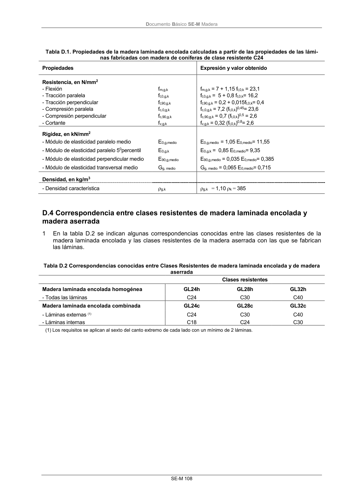

DB-SE-M · Página 114 · versión 2019-12-20
SHA256: 26b5819839ebfda78b0b119c5e76a0a37773b0d763c05688541870075df93718 · página física 114 de 132 · métodos de encabezado
solo si están cotejados.
Documento · ← p. 113 · p. 115 →
Formatos: Markdown · JSON de bloques · PDF p. 114 · imagen PNG
Documento Básico SE-M Madera SE-M 108 Tabla D.1. Propiedades de la madera laminada encolada calculadas a partir de las propiedades de las lámi- nas fabricadas con madera de coníferas de clase resistente C24 Propiedades Expresión y valor obtenido Resistencia, en N/mm2 - Flexión fm,g,k fm,g,k = 7 + 1,15 ft,0,k = 23,1 - Tracción paralela ft,0,g,k ft,0,g,k = 5 + 0,8 ft,0,k= 16,2 - Tracción perpendicular ft,90,g,k ft,90,g,k = 0,2 + 0,015ft,0,k= 0,4 - Compresión paralela fc,0,g,k fc,0,g,k = 7,2 (ft,0,k)0,45= 23,6 - Compresión perpendicular fc,90,g,k fc,90,g,k = 0,7 (ft,0,k)0,5 = 2,6 - Cortante fv,g,k fv,g,k = 0,32 (ft,0,k)0,8= 2,6 Rigidez, en kN/mm2 - Módulo de elasticidad paralelo medio E0,g,medio E0,g,medio = 1,05 E0,medio= 11,55 - Módulo de elasticidad paralelo 50percentil E0,g,k E0,g,k = 0,85 E0,medio= 9,35 - Módulo de elasticidad perpendicular medio E90,g,medio E90,g,medio = 0,035 E0,medio= 0,385 - Módulo de elasticidad transversal medio Gg, medio Gg, medio = 0,065 E0,medio= 0,715 Densidad, en kg/m3 - Densidad característica g,k g,k = 1,10 k = 385 D.4 Correspondencia entre clases resistentes de madera laminada encolada y madera aserrada 1 En la tabla D.2 se indican algunas correspondencias conocidas entre las clases resistentes de la madera laminada encolada y las clases resistentes de la madera aserrada con las que se fabrican las láminas. Tabla D.2 Correspondencias conocidas entre Clases Resistentes de madera laminada encolada y de madera aserrada Clases resistentes Madera laminada encolada homogénea GL24h GL28h GL32h - Todas las láminas C24 C30 C40 Madera laminada encolada combinada GL24c GL28c GL32c - Láminas externas (1) C24 C30 C40 - Láminas internas C18 C24 C30 (1) Los requisitos se aplican al sexto del canto extremo de cada lado con un mínimo de 2 láminas.
